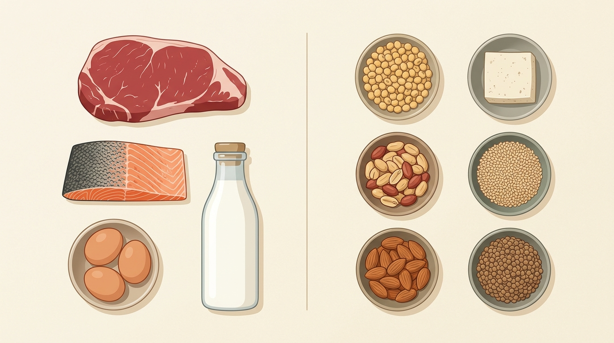
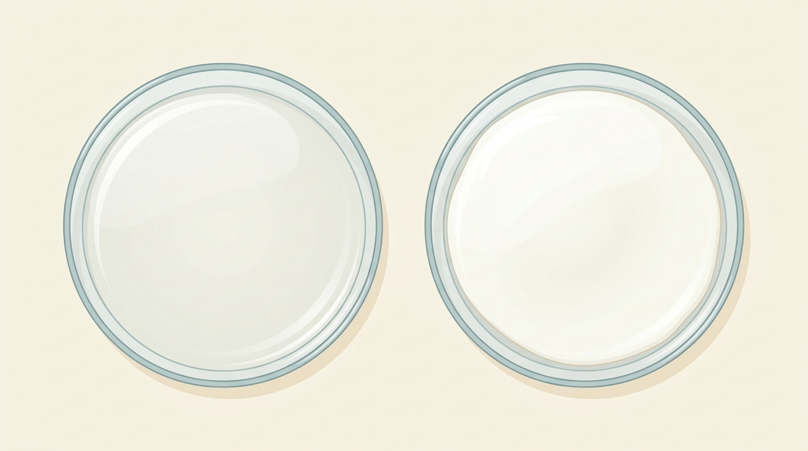
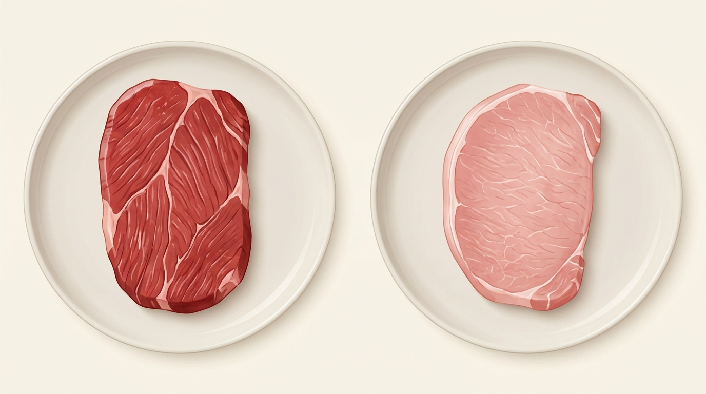

Ở bài trước về lipid, chúng ta đã biết lớp kép phospholipid tạo nên cấu trúc nền tảng của màng tế bào. Nhưng để vận chuyển chất, tiếp nhận tín hiệu và điều hòa các hoạt động sống, màng và toàn bộ cơ thể sinh vật cần đến sự tham gia của một đại phân tử đặc biệt: Protein.
Quan sát các phân tử protein tiêu biểu và ghép nối từng protein với chức năng sinh học tương ứng.
Các phân tử như Collagen, Amylase, Hemoglobin, Kháng thể, Insulin, Actin-myosin có điểm chung cốt lõi nào?
Hãy chọn một protein ở cột trái, sau đó chọn nhóm chức năng tương ứng ở cột phải:
Ví dụ Protein tiêu biểu
7 Nhóm chức năng sinh học
Câu hỏi trung tâm của bài học
Protein được cấu tạo như thế nào? Vì sao chỉ từ khoảng 20 loại amino acid lại có thể tạo nên vô số loại protein có cấu trúc và chức năng kỳ diệu như vậy?
Để trả lời câu hỏi này, trước hết chúng ta cùng khám phá đơn phân cơ bản cấu tạo nên protein: Amino acid.
Từ amino acid đến chuỗi polypeptide
Tất cả các protein đều là những đại phân tử sinh học được cấu tạo theo nguyên tắc đa phân, trong đó các đơn phân là amino acid. Các amino acid tham gia cấu tạo protein đều có chung một cấu trúc cơ bản.
Lắp ghép 4 thành phần vào đúng vị trí quanh Carbon α trung tâm, sau đó quan sát cách hình thành liên kết peptide.
Nhóm Amino
Bên trái Carbon α
–NH₂
Nhóm Carboxyl
Bên phải Carbon α
–COOH
Nguyên tử Hydrogen
Phía trên Carbon α
–H
Gốc / Nhóm R (biến tính)
Phía dưới Carbon α
–R
Hình thành liên kết peptide và phân tử Dipeptide
Hai amino acid tiến lại gần nhau. Nhóm carboxyl (–COOH) của amino acid thứ nhất sẽ phản ứng với nhóm amino (–NH₂) của amino acid thứ hai:
Liên kết peptide trong phân tử protein được hình thành giữa những nhóm nào?
Trình tự amino acid tạo nên sự đa dạng
Trong tự nhiên có hàng trăm loại amino acid, nhưng chỉ có khoảng 20 loại amino acid thường xuyên tham gia cấu tạo nên protein của sinh vật. Các amino acid này giống nhau ở phần cấu trúc chung và chỉ khác nhau ở nhóm R.
So sánh 2 chuỗi polypeptide cùng thành phần nhưng khác trình tự, sau đó phân loại các nguồn thực phẩm cung cấp protein cho cơ thể.
Chuỗi polypeptide 1 (Trình tự: A – B – C – D)
A
B
C
D
Gồm 4 amino acid liên kết theo thứ tự tuyến tính: Alanine (A), Valine (B), Serine (C), Lysine (D).
Chuỗi polypeptide 2 (Trình tự: A – C – B – D)
A
C
B
D
Cùng chứa 4 amino acid trên, nhưng hoán đổi vị trí giữa C và B.
Hai chuỗi polypeptide trên có giống hệt nhau về đặc tính sinh học không?
Nguồn thực phẩm cung cấp protein cho cơ thể
Cơ thể người cần được cung cấp đầy đủ protein từ thức ăn để tổng hợp các amino acid thiết yếu (amino acid không thay thế mà cơ thể không tự tổng hợp đủ). Quan sát hình ảnh và hoàn thành phân loại:

Nhóm Đạm Động Vật (Nhấn để chọn)
Nhóm Đạm Thực Vật (Nhấn để chọn)
Khay thực phẩm cần phân loại:
Bốn bậc cấu trúc của protein
Protein không chỉ là một chuỗi amino acid duỗi thẳng, mà trải qua các bậc cuộn gấp phức tạp trong không gian 3 chiều. Mỗi bậc cấu trúc kế thừa và được hình thành dựa trên bậc cấu trúc phía trước.
Nhấn vào từng bậc cấu trúc (Bậc 1, Bậc 2, Bậc 3, Bậc 4) để quan sát đặc điểm và các liên kết duy trì.
Điểm khác biệt cốt lõi nhất giữa cấu trúc bậc 4 và cấu trúc bậc 3 của protein là gì?
Cấu trúc không gian tạo nên chức năng
Tại sao protein lại có thể đảm nhiệm những vai trò cực kỳ đa dạng và chính xác đến vậy? Bí mật nằm ở mối quan hệ chặt chẽ giữa cấu trúc không gian 3 chiều và tính đặc hiệu trong hoạt động sinh học.
Khám phá chuỗi nguyên nhân cấu trúc quy định chức năng và mô hình tương thích ổ khóa – chìa khóa của Enzyme.
Chuỗi nguyên nhân cốt lõi trong Sinh học phân tử
1. Trình tự amino acid
2. Cách chuỗi gấp cuộn
3. Hình dạng không gian 3D
4. Chức năng đặc hiệu
Mô hình Enzyme và Cơ chất (Tính đặc hiệu không gian)
Enzyme có một vùng không gian đặc biệt gọi là Trung tâm hoạt động. Hãy thử đưa 2 loại cơ chất khác nhau vào trung tâm hoạt động để quan sát sự tương thích:
Biến tính – khi protein mất hình dạng đặc trưng
Cấu trúc không gian 3 chiều của protein được giữ ổn định bởi các liên kết yếu (liên kết hydrogen, tương tác kị nước, tương tác ion). Khi chịu tác động của các yếu tố môi trường bất lợi như nhiệt độ cao, độ pH khắc nghiệt hay hóa chất, các liên kết này bị phá vỡ, làm protein bị biến tính.
Quan sát hiện tượng lòng trắng trứng khi đun nóng và tìm hiểu cơ chế biến tính ở cấp độ phân tử.

Điều gì đã xảy ra với phân tử protein (Albumin) trong lòng trắng trứng khi bị đun nóng?
Lưu ý khoa học cốt lõi về biến tính
Biến tính không đồng nghĩa với phân hủy hoàn toàn: Biến tính thông thường chỉ làm phá vỡ cấu trúc không gian bậc 2, 3 (và 4), trong khi khung liên kết peptide bậc 1 vẫn nguyên vẹn (chuỗi amino acid không bị cắt đứt rời rạc).
Không duỗi thẳng tuyệt đối: Chuỗi polypeptide sau khi biến tính thường cuộn rối hoặc kết tụ lại thành mảng đông đặc, chứ không duỗi thành sợi dây thẳng tắp.
Hồi tính: Một số trường hợp biến tính nhẹ khi đưa về nhiệt độ/pH sinh lý bình thường có thể tự gấp cuộn lại đúng cấu trúc (hồi tính); nhưng nhiều trường hợp biến tính mạnh (như luộc trứng chín) sẽ không thể tự hồi phục.
Vận dụng – Tổng kết – Kết nối sang DNA/RNA
Bây giờ, chúng ta cùng vận dụng các kiến thức đã học để giải thích một hiện tượng rất quen thuộc trong đời sống: Vì sao cùng là thịt (nguồn protein cơ vân), nhưng thịt bò và thịt lợn lại có màu sắc, kết cấu thớ cơ và hương vị hoàn toàn khác nhau?

Dưới góc độ sinh học phân tử, yếu tố quyết định tạo nên sự khác biệt giữa protein cơ của thịt bò và thịt lợn là gì?
TỔNG KẾT TOÀN DIỆN BÀI HỌC VỀ PROTEIN
1. Đơn phân & Cấu tạo
Đơn phân là amino acid. Gồm Carbon α liên kết với nhóm –NH₂, –COOH, –H và gốc –R. Liên kết peptide nối các amino acid tạo chuỗi polypeptide.
2. Bốn bậc cấu trúc
Bậc 1 (trình tự chuỗi), Bậc 2 (xoắn α, nếp β), Bậc 3 (cuộn 3D của 1 chuỗi), Bậc 4 (từ 2 chuỗi trở lên). Trình tự bậc 1 chi phối cách cuộn 3D.
3. Bảy nhóm chức năng
Cấu trúc, Xúc tác, Vận chuyển, Bảo vệ, Điều hòa, Vận động và Tiếp nhận thông tin. Cấu trúc không gian đặc thù quyết định tính đặc hiệu.
CẦU NỐI SANG MODULE M04 (NUCLEIC ACID)
Trình tự amino acid quyết định toàn bộ cấu trúc và chức năng của protein. Vậy thông tin nào trong tế bào đã quy định chính xác trình tự sắp xếp của các amino acid này?
Đó chính là thông tin di truyền được lưu trữ và truyền đạt qua các đại phân tử Nucleic acid (DNA và RNA) – nội dung trung tâm của bài học tiếp theo (Module M04).
Chúc Mừng Bạn Đã Hoàn Thành!
Bạn đã làm chủ toàn bộ kiến thức cốt lõi về Protein: từ cấu tạo amino acid, liên kết peptide, 4 bậc cấu trúc không gian, 7 nhóm chức năng sinh học đến hiện tượng biến tính!